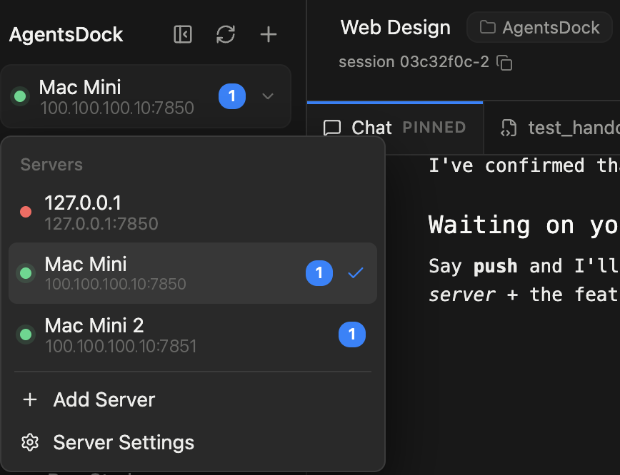
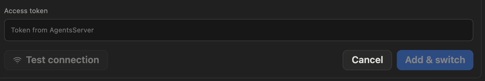
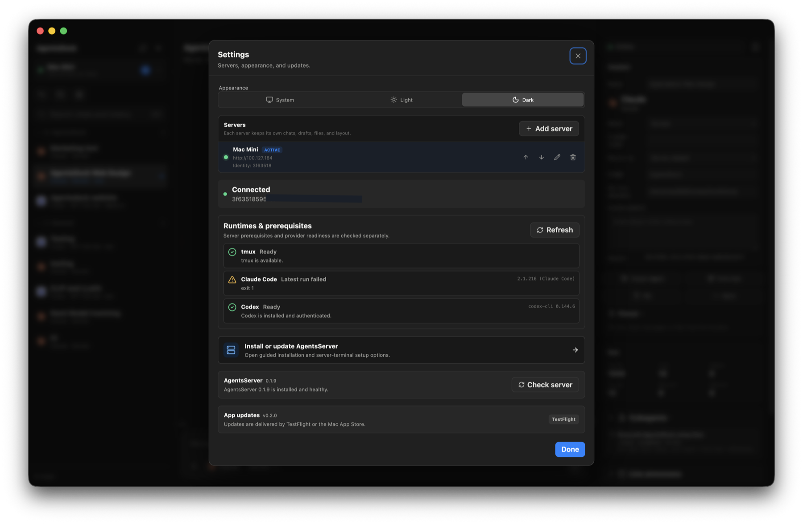

文档
搭建指南
- AgentsServer 在你自己的远程机器上执行实际工作。
- AgentsDock 客户端运行在你的设备上并连接到这台服务器；远程机器搭建一次，之后想连多少设备都可以。
开始之前
- 一台由你掌控、保持开机的远程机器（macOS 或 Linux）来运行服务器。
tmux是可选的，只有应用内终端需要它。 - 一个 Tailscale 账号（可选）——仅在需要从局域网之外访问远程机器时才用得到。在同一 Wi‑Fi 下可以直接用机器的局域网 IP；Tailscale 让你能从其他任何地方安全连接。
- 你计划使用的提供方 CLI（Claude Code、Codex 或 Cursor）已安装在远程机器上。
- 一台能运行 AgentsDock 客户端的设备：macOS、Windows、Linux、iPhone、iPad 或 Android。
AgentsDock 是完全自托管的。你的会话、文件和 API 密钥都留在你的远程机器上——应用只是一个查看窗口。
第 1 部分搭建远程机器
在负责执行工作的那台机器上做一次即可。它会持续运行，你的各个设备都连接到它。
1安装 AgentsServer
在远程机器上克隆服务器仓库并运行安装脚本：
git clone https://github.com/ZhengyiLuo/AgentsServer.git
cd AgentsServer
./install.sh服务器默认监听 7850 端口，并在远程机器上持续运行——你的设备连接的就是它。
它由一个访问令牌保护，安装脚本结束时会打印一次——现在就复制下来，第 2 部分在每台设备上都要输入。之后想再次查看，在远程机器上运行：
./install.sh --show-token2在远程机器上登录提供方 CLI
安装并登录你要让 AgentsDock 使用的提供方 CLI：Claude Code、Codex 或 Cursor。按提供方支持的正常方式登录即可，例如浏览器登录或配置 API key。若应用仍显示某个后端不可用，请在设置里点击 Recheck CLIs 重新检查。
3在远程机器上安装 Tailscale 可选
仅在需要从局域网之外访问远程机器时才需要。如果你的设备和远程机器在同一 Wi‑Fi 下，可以跳过这一步，在第 2 部分直接使用机器的局域网 IP。
在远程机器上安装 Tailscale 并登录。这会给机器分配一个私有的 100.x.x.x 地址，你的其他设备可以从任何地方访问它——无需向公网开放任何端口。记下这个地址（或机器的 Tailscale 主机名），第 2 部分会用到。
有不止一台机器？在每台机器上重复第 1 部分。AgentsDock 可以同时保存多个服务器——它们都会出现在侧边栏顶部的服务器菜单里，一键即可切换。

第 2 部分从你的设备连接
在你想作为 AgentsDock 客户端使用的每台设备上重复以下步骤。
1下载 AgentsDock 客户端
到下载区选择你的平台（macOS、Windows、Linux、iPhone、iPad 或 Android），下载并打开客户端。
2在设备上安装 Tailscale 可选
仅当你在远程机器上安装了 Tailscale 时才需要。在这台设备上也安装它并用同一账号登录，这样两端就在同一个私有网络里，应用才能连到服务器。若在同一局域网内，跳过这一步，直接用远程机器的局域网 IP。
3连接到你的服务器
在 AgentsDock 中添加服务器，填入远程机器的地址——它的 Tailscale 100.x.x.x 地址加端口 7850——然后把第 1 部分得到的访问令牌粘贴到访问令牌（Access token）字段。它长这样：
ad_tok_9f3b7c2e•••••••••••••••••••• (sample)这个令牌存放在你的服务器机器上——也就是第 1 部分搭建的远程机器，而不是你正在用来连接的设备。想再次获取，在远程机器上运行：
./install.sh --show-token点击测试连接（Test connection）确认应用能连到服务器，再点添加并切换（Add & switch）。连接成功后：新建一个会话，选择一个提供方，并指定远程机器上的一个工作目录。


要连接不止一台机器？用同样的方法逐个添加——打开侧边栏顶部的服务器菜单，选择 Add Server。之后你随时可以在该菜单里切换服务器。
连不上？
- 确认在同一台设备的浏览器里能打开服务器 URL——浏览器打不开的话，应用也连不上。
- 检查两端的 Tailscale 都已开启并登录，并且你用的是远程机器的
100.x.x.xTailscale 地址（而不是只在远程机器自己网络里有效的局域网 IP）。 - 确保 URL 带了端口（
7850），且访问令牌完全一致、没有多余空格。
连接好了？到主要功能看看 AgentsDock 能做什么 →